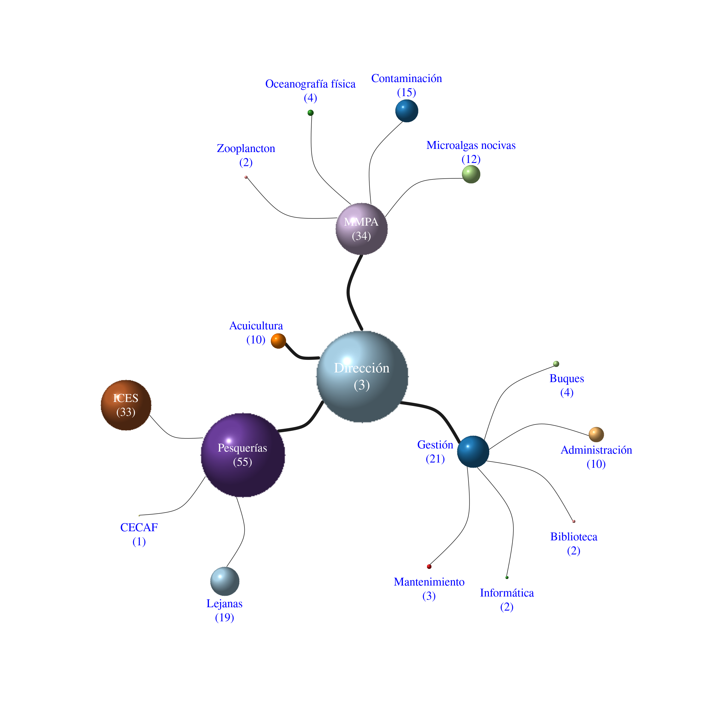
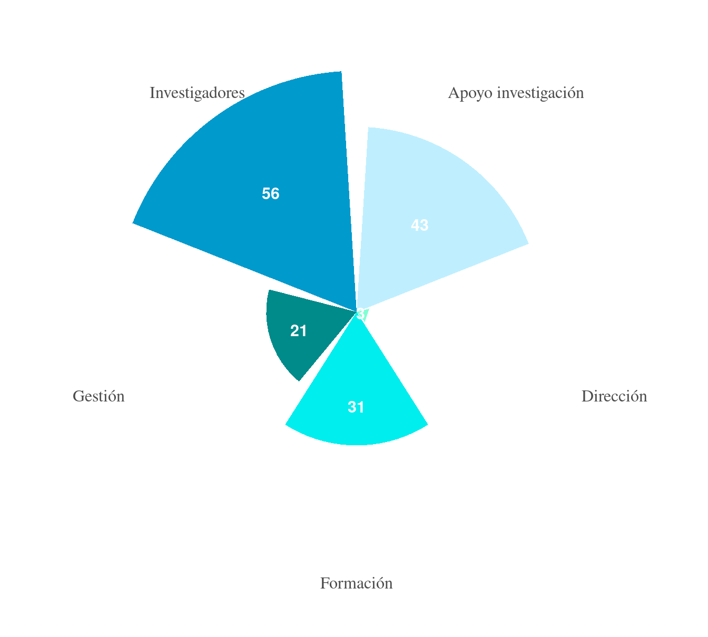
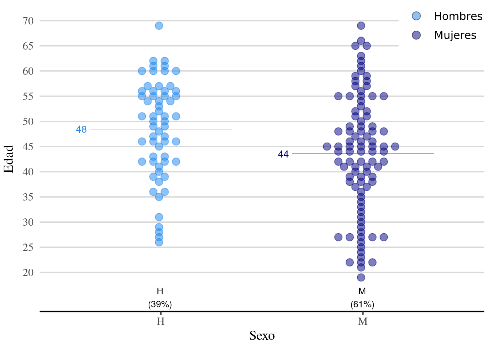
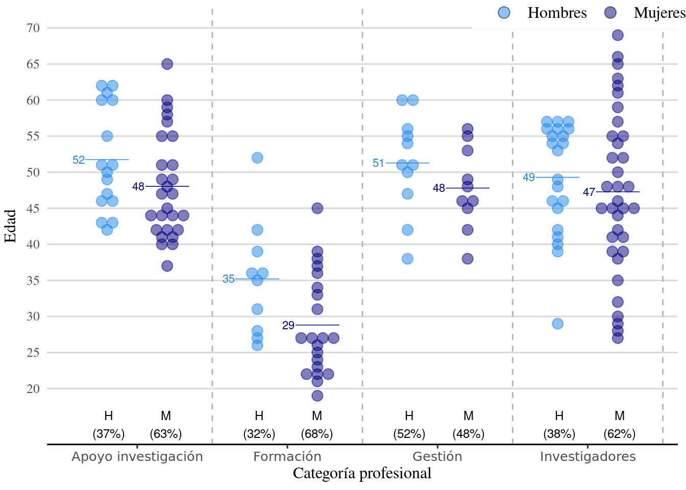
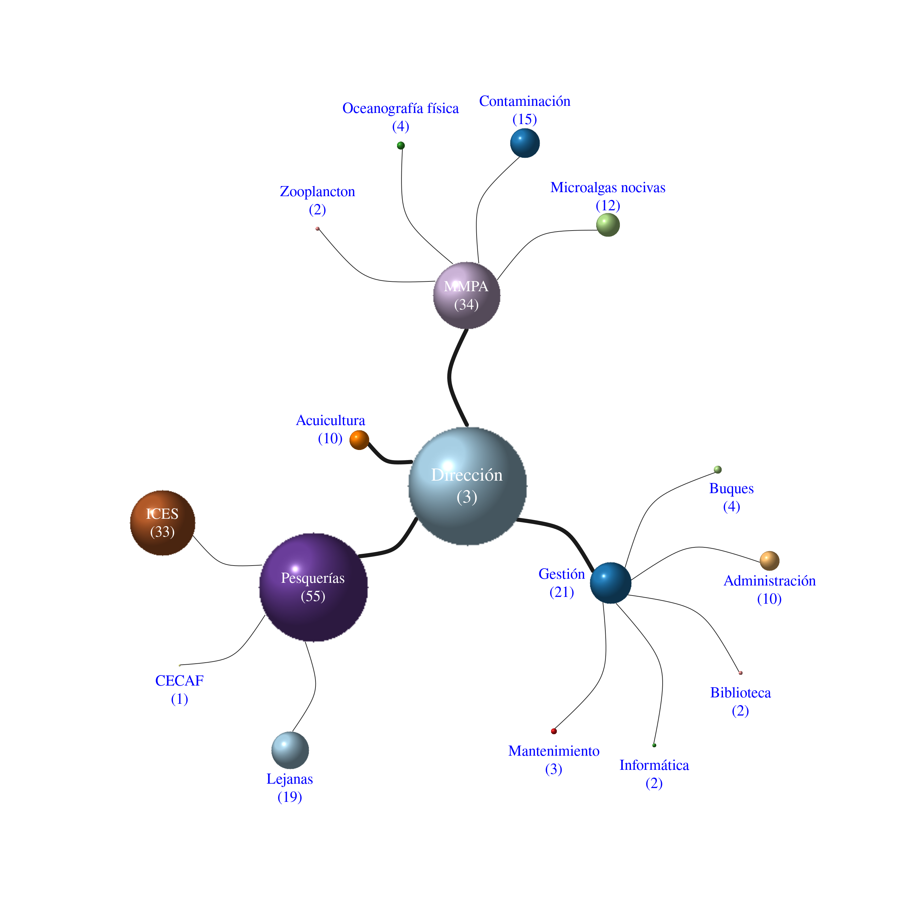
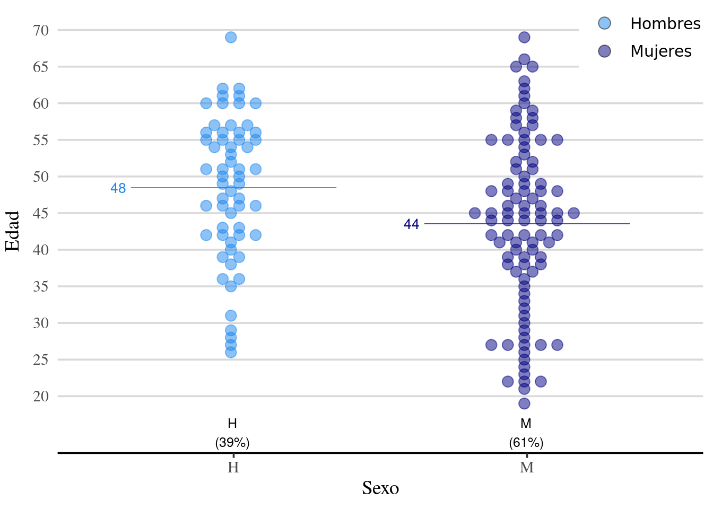
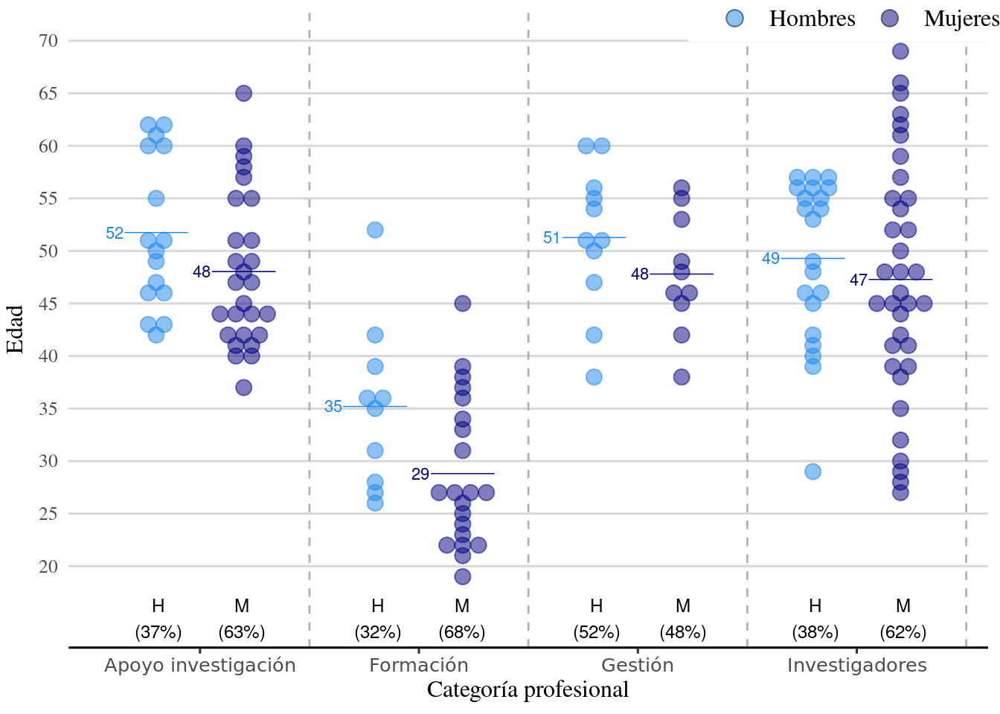

4 PERSONAL
4.1 Personal en plantilla del COV

4.2 Personal 2019


Formación: prácticas FPII y Universidad, Másteres, Tesis y Estancias de Colaboración↩︎



Formación: prácticas FPII y Universidad, Másteres, Tesis y Estancias de Colaboración↩︎